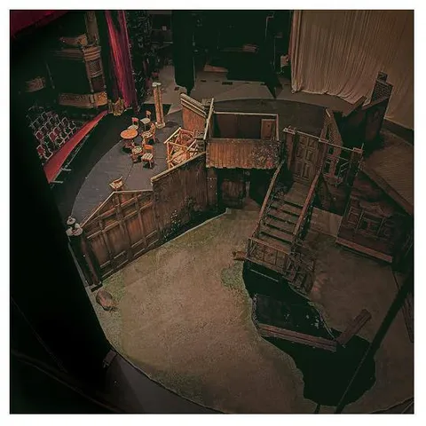

Вернемся к теме стресса и ресурса. Многих (в том числе, меня) утомляет однообразие. Когда изо дня в день твоя работа выглядит пугающе одинаково, когда ты как белка в колесе - это угнетает. Даже если у тебя каждый день новые задачи, сложности, вызовы - запал иссякает. Требуется смена декораций. Любой эффект новизны мне дает бесплатные эндорфины. Стабильность - это хорошо, но иногда надо что-то немного менять.
Через полчаса вылетает мой самолет в командировку. Я люблю ездить в командировки, притом мне в кайф и сама поездка (хотя физически для деда это уже довольно утомительно), и эффект после нее - даже небольшая перезагрузка в плане быта дает по возвращении тот самый эффект новизны. Тут можно отзумиться и посмотреть на вопросы под новыми ракурсами, можно переприоритизировать какие-то задачи. Или просто с новыми силами за что-то взяться, потому что до этого из-за монотонности работы уже не хватало энтузиазма.
В самой командировке - новые люди, новые нетипичные задачи, другая обстановка, и вообще - движ, который заряжает и дает ресурс. Трехмерные люди, которых обычно видишь только на экране, в жизни более прикольные. Задачи, под которые едешь, часто могут научить чему-то новому. А если вы руководитель, то уделить личное внимание команде в другом офисе - это гигиена вежливости и ответственности.
Очень рекомендую всем периодически пробовать любого рода перемены в повседневном быту. Съездите на выходные в соседний город. Запланируйте отпуск. Начните заниматься спортом. Сходите на профессиональную конференцию. Покатайтесь с ребенком на великах. Погуляйте спонтанно с женой по центру города. Поменяйте обои на заставке телефона, если не готовы на большее.
А меня больше всего драйвят именно поездки. Конференции, командировки, путешествия, выезды с коллегами - лучший способ немного перезагрузиться и стряхнуть чувство монотонности и рутины. Круто, когда работа позволяет все это делать, вплоть до того, чтобы просто недельку поработать из другого офиса. Я, например, почти каждый год на недельку уезжаю в Сочи (Сириус, если быть точным) и работаю из тамошнего офиса, особенно поздней осенью или ранней весной, когда в Москве мерзко, а в Сочи всегда класснно.
Питер, встречай! Ворчливый дед в городе!
